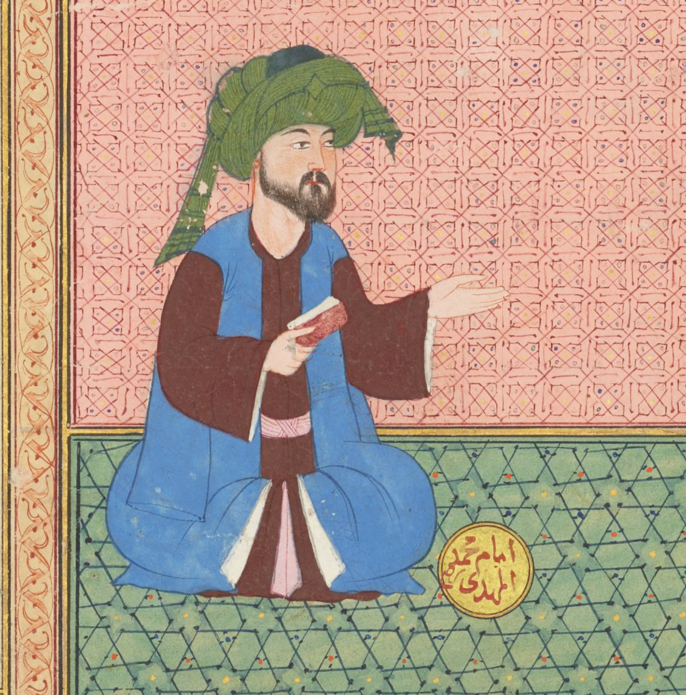

بِسْمِ اللهِ الرَّحْمَٰنِ الرَّحِيمِ
A Book of Wonders
The Mahdī — The Rightly Guided One
الْمَهْدِيّ

👤Image: Muḥammad al-Mahdī. Sun\'i (attributed).
In Zubdat al-Tawārīkh (Cream of Histories), 1583–1590.
Manuscript, colored pigments and gold on paper.
CBL T 414, fol. 129r. Chester Beatty Library, Dublin.
Physical Description
The Mahdī is described as having a high forehead and a prominent nose. His name is Muḥammad ibn ʿAbd Allāh al-Ḥasanī al-ʿAlawī — a descendant of the Prophet ﷺ through Fāṭima (may God be pleased with her) through al-Ḥasan. His name is the same as the Prophet's name, and his father's name is the same as the Prophet's father's name.
Lore & Significance
The Mahdī is an eschatological savior who appears to fill the world with justice and to unite the Muslim community before the return of Isa (peace be upon him). The Prophet ﷺ said: "Even if only one day was left of this world, Allah would make that day long so that He could send a man who is of me or of my family, whose name is the same as my name and whose father's name is the same as my father's name." (Recorded by al-Tirmidhī and Abū Dāwūd, and classed as Ṣaḥīḥ by Shaykh al-Islām Ibn Taymiyya in Minhāj al-Sunna, 4/211).
The Mahdī will emerge after a period of great disorder and amid fighting among the sons of caliphs, and will be a righteous ruler who fills the world with justice. His reign will be an era of immense abundance. The sky will send down rain, the earth will yield all its produce, and wealth will be distributed so freely that people will not count it. He appears when the earth is filled with oppression and tyranny, and religious knowledge is disappearing. He will be a leader who gathers the people and guides them in battles, ruling for seven years. In some Shia tradition, Hasan ibn Ali al-Askari, the eleventh Imam, is believed to have had a son named Muhammad al-Mahdi, who went into occultation and will return as the Mahdī when the time comes.
As to why the Mahdī comes from the line of al-Ḥasan, al-Ḥasan (may God be pleased with him) was appointed caliph after the martyrdom of ʿAlī (may God be pleased with him). He ruled for six months and then gave up his rule to Muʿāwiya in order to unite the Muslims. For this sacrifice, he was rewarded with the Mahdī being from his descendants. Al-Hasan's sacrifice represents a fundamental act of devotion towards God and the community, sacrificing positions in this world for blessings in the next. He stands as a model for modern Muslims, who often must sacrifice worldly benefits for those in the A'akhirah (hereafter).
For many Muslims in modernity, the current state of the world, marked by instability, distress, wars, and so many more immoral concepts, can be disheartening. However, the Mahdi stands as a way through which Muslims can have hope for the future, as the world's current state is purely a prerequisite for his arrival. The Mahdi teaches Muslims patience and that there is always a larger purpose in struggle. Additionally, the Mahdi acts as a unifying figure for the Muslim Ummah (or community) when the world is so divided by nations, race, and national interests.
Throughout history, there have been many Muslims who have claimed to be the Mahdī, including Dhu’l-Nafs al-Zakiyyah (d. 145 AH), Ibn Tumart, and Muhammad Ahmad al-Sudani . A notable modern instance occurred in 1980 when Muhammad ibn ‘Abd-Allāh al-Qahtani and his followers occupied the Grand Mosque in Makkah, claiming he was the Mahdī. (ʿArīfī, The End of the World, pp. 245- 250)